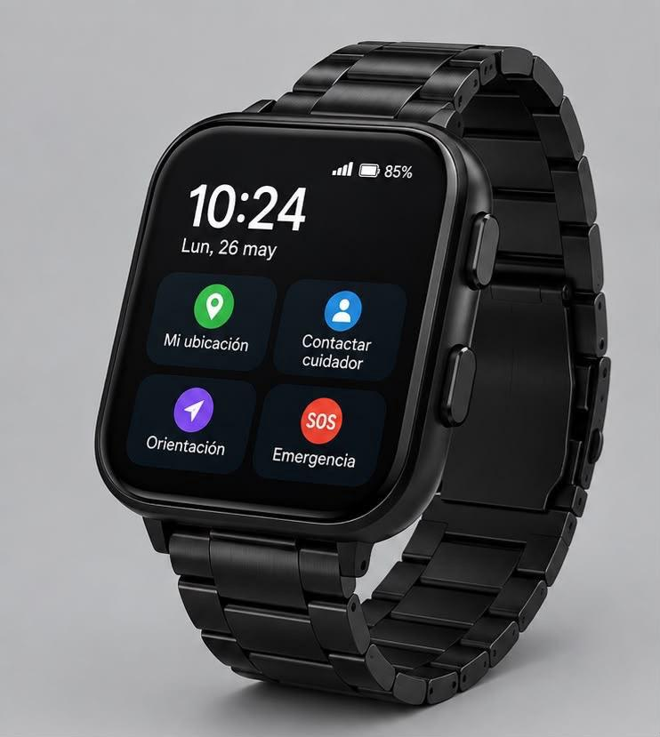

Tecnología que
acompaña.
Un proyecto tecnológico diseñado para brindar orientación, seguridad y acompañamiento a personas con Alzheimer y a sus familias.
Pensado para proteger
El concepto reúne diferentes funciones destinadas a facilitar el acompañamiento y aumentar la seguridad del usuario.
Ubicación GPS
El proyecto contempla tecnología de localización para facilitar la ubicación del usuario cuando sea necesario.
Botón SOS
Un botón de emergencia pensado para permitir que el usuario solicite ayuda rápidamente.
Contacto
Una función pensada para facilitar la comunicación entre el usuario y su cuidador.

Diseñado para acompañar.
MEMORA AEI propone un reloj inteligente pensado para integrar funciones de orientación, ubicación, comunicación y emergencia en un dispositivo de uso cotidiano.
¿Qué hace cada función?
Selecciona una de las funciones del reloj para conocer su propósito dentro del proyecto MEMORA AEI.
Mi ubicación — GPS
La función GPS está planteada para facilitar la localización del usuario. Desde el concepto del reloj, esta herramienta busca permitir que el cuidador pueda conocer la ubicación del dispositivo cuando sea necesario.
- Facilita la localización del usuario.
- Está pensada para apoyar al cuidador.
- Puede ser útil cuando el usuario se encuentra fuera de su entorno habitual.
- Se integra directamente en la interfaz del reloj.
SOS — Emergencia
El botón SOS está pensado para ofrecer una forma sencilla y rápida de solicitar ayuda. El usuario podría utilizarlo cuando se encuentre ante una situación que requiera atención.
- Botón de emergencia de fácil reconocimiento.
- Busca facilitar una solicitud rápida de ayuda.
- Está pensado para situaciones de emergencia.
- Su diseño prioriza que sea fácil de identificar dentro de la interfaz.
Contacto — Cuidador
La función de contacto está planteada para facilitar la comunicación entre la persona que utiliza el reloj y su cuidador o familiar.
- Facilita el acceso al contacto del cuidador.
- Busca reducir la cantidad de pasos necesarios para comunicarse.
- Está pensada para un uso sencillo.
- Puede ayudar a mantener una comunicación más directa con la persona responsable.
Orientación — Ayuda
La función de orientación busca ofrecer una interfaz clara que ayude al usuario a encontrar opciones importantes dentro del dispositivo.
- Interfaz sencilla y fácil de reconocer.
- Busca facilitar la navegación dentro del reloj.
- Permite acceder a funciones importantes desde la pantalla principal.
- Está pensada teniendo en cuenta la facilidad de uso.
¿Cómo funciona?
Las funciones principales están planteadas para ser sencillas de reconocer y utilizar.
Orientación
Una interfaz sencilla busca facilitar el uso cotidiano del dispositivo.
Ubicación
La función de ubicación está pensada para facilitar la localización.
Contacto
El concepto contempla comunicación con el cuidador.
Emergencia
El botón SOS permite plantear una solicitud rápida de ayuda.
Botón SOS
El botón SOS está pensado para permitir que el usuario solicite ayuda rápidamente cuando se encuentre en una situación de emergencia.
Una idea pensada para acompañar.
El concepto incorpora un pequeño panel solar capaz de aprovechar la luz para contribuir a la alimentación del dispositivo.
Está planteado para aprovechar tanto la luz solar como la luz artificial.
Tecnología con propósito.
MEMORA AEI nace como una propuesta tecnológica enfocada en apoyar a las personas con Alzheimer y facilitar el acompañamiento por parte de sus familiares y cuidadores.
El objetivo es integrar diferentes funciones en un dispositivo de uso cotidiano, buscando que la tecnología sea sencilla, clara y útil.
Características
- Diseño pensado para uso diario
- Sistema de alerta SOS
- Tecnología de localización
- Función de contacto con cuidador
- Panel para aprovechar la luz
- Interfaz sencilla